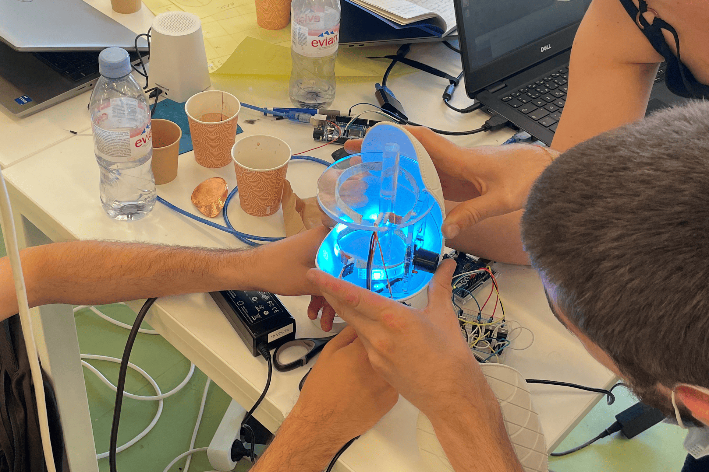
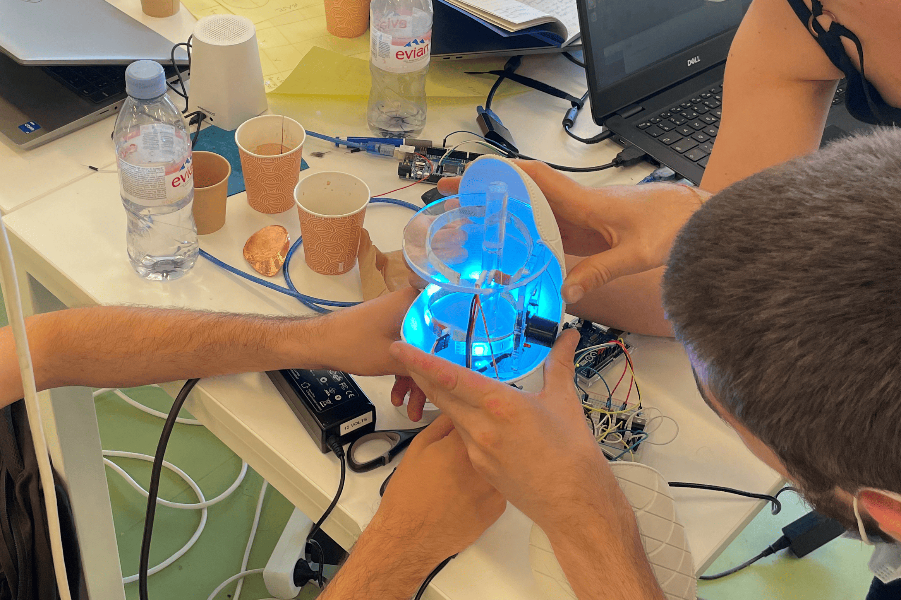

Projects

 


Cryptics : R library for real-time cryptocurrency analysis
Hi! I’m Vincent Cavez, a french Postdoctoral Scholar in Human-Centered AI and Education at Stanford University. Under the supervision of Hari Subramonyam, I design AI and pen-based interfaces to support speech-language pathologists in tracking progress and optimizing interventions with their patients.
Before that, I was fortunate to pursue my PhD thesis “Designing Pen-based Interactions for Productivity and Creativity” with the help of my amazing supervisors, Emmanuel Pietriga and Caroline Appert, within the ILDA team.